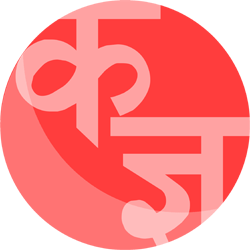

<ion-view view-title="Intro">

    <ion-nav-buttons side="left">

        <button class="button button-positive button-clear no-animation" ng-click="startApp()" ng-show="!slideIndex">
            Skip Intro
        </button>

        <button class="button button-positive button-clear no-animation"
                ng-click="previous()" ng-show="slideIndex > 0">
            Previous
        </button>

    </ion-nav-buttons>

    <ion-nav-buttons side="right">

        <button class="button button-positive button-clear no-animation"
                ng-click="next()" ng-show="slideIndex != 2">
            Next
        </button>

        <button class="button button-positive button-clear no-animation"
                ng-click="startApp()" ng-show="slideIndex == 2">
            Let's learn!
        </button>

    </ion-nav-buttons>

    <ion-slide-box on-slide-changed="slideChanged(index)">

        <ion-slide>
            <div id="logo">
                
            </div>
            <h1>Nepali Barnamala</h1>
        </ion-slide>

        <ion-slide>
            <h3>Using Barnamala</h3>

            <div id="list">
                <h5>Just three steps:</h5>
                <ol>
                    <li>Choose to learn consonants or vowels.</li>
                    <li>Slide throught the characters</li>
                    <li>Listen to what it sounds like.</li>
                </ol>
            </div>
        </ion-slide>

        <ion-slide>
            <h3>Any questions?</h3>
            <p>
                Too bad!
            </p>
        </ion-slide>

    </ion-slide-box>
</ion-view>